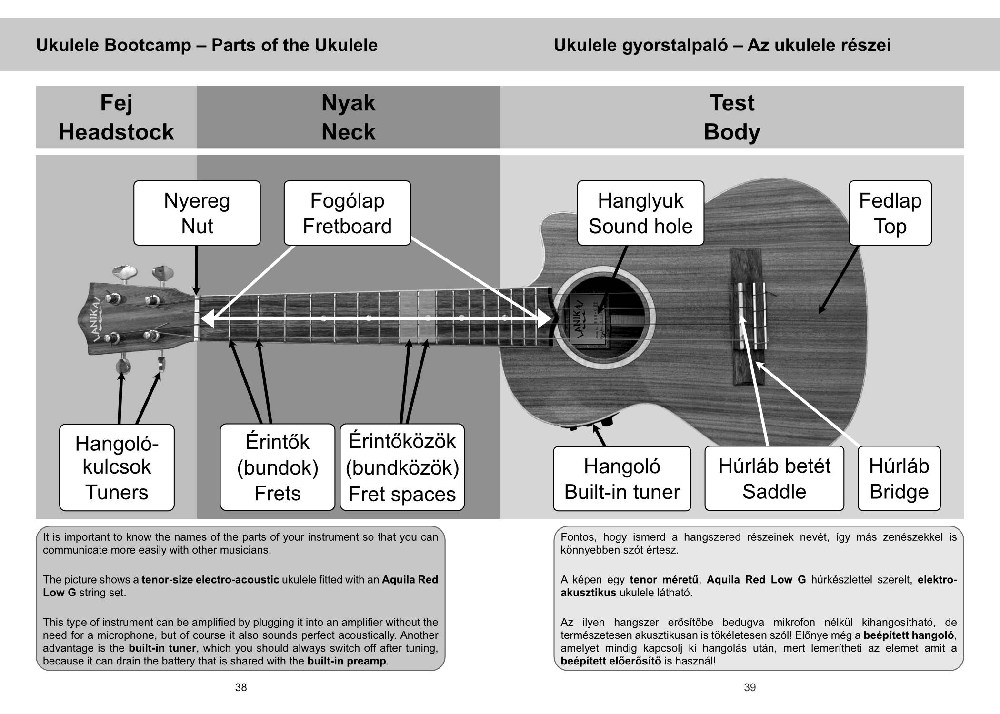
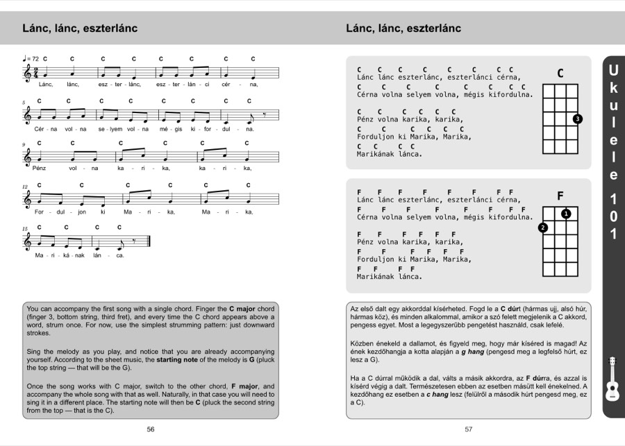
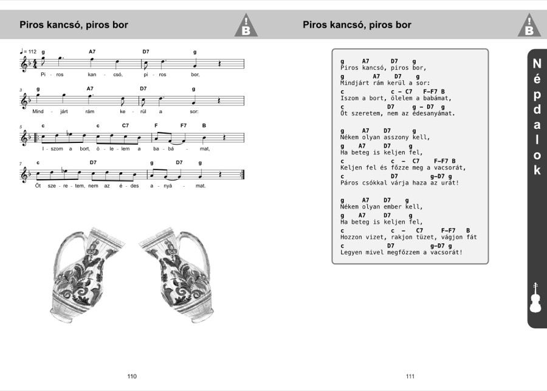
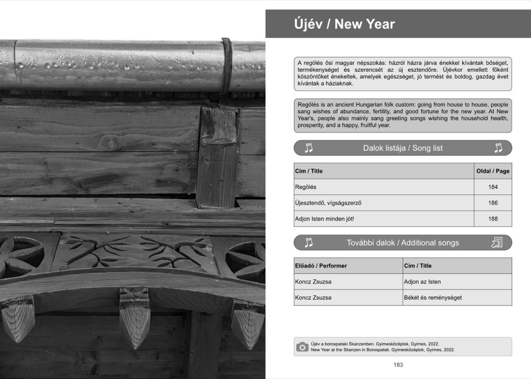

The Book
From the Author
…So this is that book—more of a songbook, with some ukulele teaching material as well. I have been living in the United States for ten years, and during that time I have played and sung countless times in the Hungarian community here—at national holidays, commemorations, and recurring annual events. This collection is the result of those occasions: many favorites, and many songs suited to one occasion or another.
The book begins with a crash course on the ukulele—for everyone who only realized in adulthood that active music-making had somehow been left out of their lives, and would like to make up for it. In the first chapter I share the thoughts and proven songs gathered from the classes I've taught for years here—in case you recognize yourself in this, and feel inspired to pick up an instrument.
Attila Levente EgyediPalo Alto, California, 2026
What makes it unique
A bilingual songbook with ~63 songs, beat-by-beat chord markings, a ukulele bootcamp, a community-singing chapter, a song map, and chord charts for six instruments — in a lay-flat wire-o binding that stays open on a music stand.
There is nothing else like it on the market: international ukulele books don't cover the Hungarian repertoire or the esztam (boom-chuck) pulse, Hungarian songbooks don't provide accompaniment or method, and scout song booklets don't mark the beat.
Inside the book
Each spread shows both languages side by side — the whole book is bilingual.




Table of contents
A chapter-level overview — the book holds 63 songs across these chapters.
Introductory chapters
- Foreword
- Endorsements
- Introduction
- On Tempo
- Community Singing
- Songs on the Map
- A Note for Non-Native Hungarian Speakers
Songs & charts
- Bootcamp
- Beginner Songs
- Folk Songs for the Ukulele
- Folk Songs
- Romani Songs
- Carnival Season
- March 15th
- Mother's Day
- Father's Day
- August 20th
- October 23rd
- Saint Nicholas
- Christmas
- New Year
- Celebratory Songs
- Anthems
- Chord Charts
- Index
Details
7 × 10", 222 pages, lay-flat wire-o binding, first edition, Palo Alto, 2026.